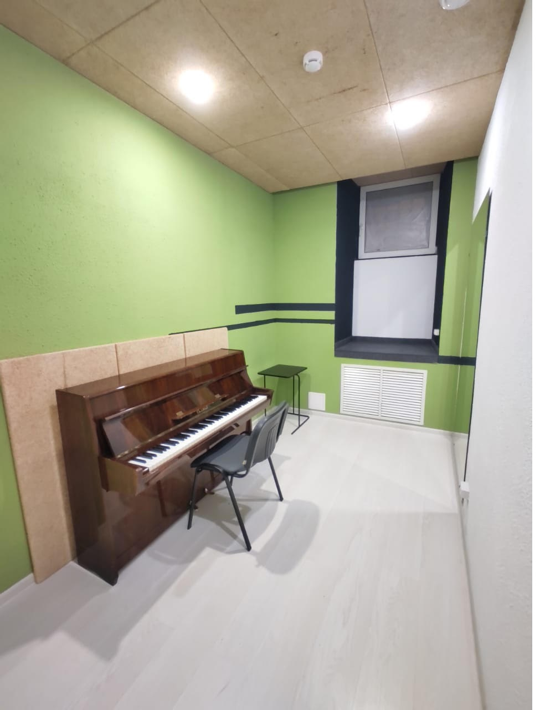

!!!ФИЛИАЛ Брюсов1 ВРЕМЕННО закрыт до 13 июня 2021 (капитальный ремонт дома)!!!
PIANOROOMS — сеть репетиториев в центре Москвы.
51 класс от 3м2 до 17м2 с окнами и без,
с одним и двумя пианино, с кондиционерами и без.
5 залов от 25м2 до 50м2 с
одним и двумя роялями.
Для каждого, кому необходима хорошая акустика, фортепианная клавиатура
под руками, просто свободное помещение для занятий теорией или репетиции роли в спектакле,
срочно или заблаговременно, на 30 минут или на двенадцать часов, соло или в камерном составе.
Круглосуточно и без выходных. Ночью скидка 30%.
Зал
Камерный зал c двумя окнами и дверью из стеклопакета, роялем "August Forster", регулируемой банкеткой для пианиста и дополнительными табуретками и стульями (35 штук).
В помещении есть кондиционер, розетки, большой телевизор, вешкалка для верхней одежды и подоконники для личных вещей и сумок.
Подходит для проведения концертов, семинаров, мастер-классов (посадка до 40 человек) и репетиций ансамблей.
Вместимость: до 40 человек.
Цена: 350 – 900 ₽/час
Класс 0
Небольшой класс с фортепиано "Заря" и акустической отделкой.
В помещении также есть вентилятор и розетка.
Класс проходной, но может быть отгорожен от посторонних глаз шторой.
В непосредственной близости находится один класс с дверью из стеклопакета.
Класс подходит для индивидуальных занятий на фортепиано или струнных инструментах.
Вместимость: 1 - 2 человека.
Цена: 80 – 110 ₽/час
Класс I
Класс c инструментом "Лирика", акустической отделкой, удобной банкеткой для пианиста и дополнительной табуреткой.
В помещении также есть розетка и крючок для личных вещей и сумок.
Всё, что нужно для сосредоточения и продуктивной работы музыкантов.
Вместимость: 1 - 2 человека.
Цена: 77 – 140 ₽/час
Класс II
Класс с инструментом "Заря", акустической отделкой, удобной банкеткой для пианиста и дополнительной табуреткой.
В помещении также есть розетка и крючок для личных вещей и сумок.
Всё, что нужно для сосредоточения и продуктивной работы музыкантов.
Вместимость: 1 - 2 человека.
Цена: 77 – 140 ₽/час
Класс III
Класс с инструментом "Rubinstein", акустической отделкой, удобной банкеткой для пианиста и дополнительной табуреткой.
В помещении также есть розетка и крючок для личных вещей и сумок.
Всё, что нужно для сосредоточения и продуктивной работы музыкантов.
Вместимость: 1 - 2 человека.
Цена: 77 – 140 ₽/час
Класс IV
Класс 3м2. с инструментом "Заря", акустической отделкой, удобной банкеткой
для пианиста и дополнительной табуреткой. В помещении также есть приточная
вентиляция, вентилятор, розетка и крючок для личных вещей и сумок.
Подходит для ф-но, струнных, теории.
Вместимость: 1 и более человек, зависит от состава участников.
Цена: 77 – 140 ₽/час
Класс V
Класс с фортепиано "Symphony", радующий своим благородным звучанием, c удобной банкеткой для пианиста и дополнительной табуреткой.
В помещении также есть розетка и крючок для личных вещей и сумок.
Всё, что нужно для сосредоточения и продуктивной работы музыкантов.
Вместимость: 1 и более человек.
Цена: 105 – 400 ₽/час
Класс VI
Класс с фортепиано "Hupfeld". В помещении есть вентиляция, розетка и дополнительная табуретка.
Всё, что нужно для сосредоточения и продуктивной работы музыкантов.
Вместимость: 1 и более человек.
Цена: 105 – 400 ₽/час
Класс VII
Элегантный класс с фортепиано "Petrof", кондиционером, удобной банкеткой для пианиста и дополнительной табуреткой.
В помещении также есть розетка и крючок для личных вещей.
Всё, что нужно для сосредоточенной и продуктивной работы музыкантов.
Вместимость: 1 и более человек.
Цена: 119 – 400 ₽/час
Класс VIII
Просторный и вместе с тем исключительно уютный класс с фортепиано "Petrof", кондиционером, акустической отделкой, удобной банкеткой для пианиста и дополнительными табуретками.
В классе также есть большое зеркало для вокалистов и инструменталистов, розетка и крючок для личных вещей и сумок.
Всё, что нужно для сосредоточения и продуктивной работы музыкантов.
Подходит как для соло, так и для камерного ансамбля.
Вместимость: 1 и более человек.
Цена: 170 – 400 ₽/час
Класс IX
Просторный класс с инструментом "Petrof", акустической отделкой, удобными банкетками для пианистов и дополнительными табуретками.
В помещении также есть розетка и крючок для личных вещей и сумок.
Подходит для занятий соло, камерных ансамблей, включая квинтеты с участием фортепиано.
Вместимость: 1 и более человек.
Цена: 170 – 400 ₽/час
Класс X
Класс с фортепиано "Nocturno" с очень приятным звучанием. В помещении также есть вентилятор, розетка идополнительная табуретка. Всё, что нужно для сосредоточения и продуктивной работы музыкантов.
Подходит для занятий соло, камерных ансамблей с участием фортепиано.
Вместимость: 1 и более человек.
Цена: 150 – 400 ₽/час
Класс XI
Класс с фортепиано "Ronisch" с очень приятным и благородным звучанием, c удобной банкеткой для пианиста и дополнительной табуреткой.
В помещении также есть вентиляция и розетка.
Всё, что нужно для сосредоточения и продуктивной работы музыкантов.
Вместимость: 1 и более человек.
Цена: 170 – 400 ₽/час
Класс XII
Класс с экспортынм фортепиано Заря-2 с очень приятным и благородным звучанием, с удобной банкеткой для пианиста и дополнительной табуреткой.
В помещении также есть вентиляция, розетка, тумба, вешалка для вещей и раковина.
Всё, что нужно для сосредоточения и продуктивной работы музыкантов.
Вместимость: 1 и более человек.
Цена: 170 – 400 ₽/час
Стальной класс
Класс с окном и дверью из стеклопакета, с двумя фортепиано: Экспортная Лирика и Nocturno.
С удобными банкетками для пианистов и дополнительными табуретками и стульями.
В помещении есть розетки и просторный подоконник для личных вещей и сумок.
Подходит для индивидуальных, групповых занятий и репетиций ансамблей.
Всё, что нужно для сосредоточения и продуктивной работы.
Вместимость: 1 и более человек.
Цена: 270 – 550 ₽/час
Изумрудный класс
Класс с окном и дверью из стеклопакета, фортепиано "Petrof", удобной банкеткой для пианиста и дополнительными табуретками и стульями.
В помещении есть: розетки, тумба и просторный подоконник для личных вещей и сумок.
Подходит для индивидуальных, групповых занятий и репетиций ансамблей.
Всё, что нужно для сосредоточения и продуктивной работы.
Вместимость: 1 и более человек.
Цена: 270 – 550 ₽/час
Зона отдыха
Всё для Вашего удобства и комфорта.
Бесплатный Wi-Fi, чай, кофе и кулер с водой в зоне отдыха.
Скамейки для переобувания в коридоре и гардероб.
Зеркальный зал
Вместительный, просторный камерный зал 30м2 с РОЯЛЕМ PETROF. Мощная вентиляция, хорошая акустика. 2 полностью зеркальных стены.
Вместимость: до 35 человек.
Цена: 350 – 900 ₽/час
Класс 1
Небольшой класс с вентиляцией. Пианино Zimmermann. 4 метра.
Подходит для индивидуальных и парных занятий не требующих большого пространства.
Класс около Зеркального зала.
Вместимость: 1 и более человек в зависимости от состава участников.
Цена: 150 – 400 ₽/час
Класс 2
Небольшой класс треугольной формы с вентиляцией. Пианино Geyer. 4 метра.
Подходит для индивидуальных и парных занятий не требующих большого пространства. .
Вместимость: 1 и более человек в зависимости от состава участников.
Цена: 150 – 400 ₽/час
Класс 3
Небольшой класс с вентиляцией. Пианино Geyer. 3.5 метра.
Подходит для индивидуальных и парных занятий не требующих большого пространства.
Вместимость: 1 и более человек в зависимости от состава участников.
Цена: 150 – 400 ₽/час
Класс 4
Небольшой класс с вентиляцией и окном. Пианино Wagner. 3.5 метра.
Подходит для индивидуальных и парных занятий не требующих большого пространства.
Вместимость: 1 и более человек в зависимости от состава участников.
Цена: 150 – 400 ₽/час
Класс 5
Небольшой класс с вентиляцией и окном. Пианино Fuchs & Möhr. 6 метров.
Подходит для индивидуальных занятий и небольших ансамблей.
Вместимость: 1 и более человек в зависимости от состава участников.
Цена: 170 – 400 ₽/час
Карамельный класс
Просторный вокальный класс 15м2 с хорошей вентиляцией и окном.
Большие зеркала в рост.
Подходит для индивидуальных и групповых занятий.
Вместимость: 1 и более человек в зависимости от состава участников.
Аппаратура:
Динамический вокальный микрофон Shure Beta 58A
Микшерный пульт c эффектами Yamaha MG-124CX
Микрофонная стойка напольная NordFolk NMS12B
Кабель Mini-Jack stereo - 2 x Jack mono, разъёмы REAN
Микрофонный шнур XLR-XLR Rockcable RCL30303 D6 - 2 шт
Стойка тренога под колонку Tempo SPS180
Колонка MSR400 YAMAHA
Цена: 270 – 550 ₽/час
Васильковый класс
Просторный класс 15м2 с хорошей вентиляцией и окном. Пианино Petrof.
Большие зеркала в рост. Подходит для индивидуальных и групповых занятий.
Вместимость: 1 и более человек в зависимости от состава участников.
Цена: 270 – 550 ₽/час
Фисташковый класс

Просторный класс 12м2 с хорошей вентиляцией и окном. Пианино Petrof.
Большое зеркала в рост. Подходит для индивидуальных и групповых занятий.
Вместимость: 1 и более человек в зависимости от состава участников.
Цена: 270 – 550 ₽/час
Графитовый класс
Просторный вокальный класс 15м2 с хорошей вентиляцией и окном.
Пианино Petrof. Большие зеркала в рост. Подходит для индивидуальных и групповых занятий.
Вместимость: 1 и более человек в зависимости от состава участников.
Аппаратура:
Динамический вокальный микрофон Sennheiser E 835
Микшерный пульт с эффектами Behringer 1202FX
Микрофонная стойка напольная NordFolk NMS12B
Кабель Mini-Jack stereo - 2 x Jack mono, разъёмы REAN
Микрофонный шнур XLR-XLR Rockcable RCL30303 D6
Кабель инструментальный Adam Hall K3IPP0600
Стойка тренога под колонку Tempo SPS180
Колонка MSR400 YAMAHA
Цена: 270 – 550 ₽/час
Большой камерный зал
Вместительный, просторный, большой камерный зал 50м2 в стиле современной классики.
Мощная вентиляция, хорошая акустика. 4 окна.2 рояля Ronisch.
Подходит для проведения индивидуальных, групповых занятий, мастер-классов и концертов.
Цена: 400 – 950 ₽/час
Класс 0
Небольшой класс 2м2 с пианино Лирика, хорошей вентиляцией и полукруглой стеной.
Подходит для индивидуальных занятий не требующих большого пространства.
Цена: 56 – 110 ₽/час
Класс II
Небольшой класс 3м2 с пианино Лирика и хорошей вентиляцией.
Вместимость: 1 и более человек, зависит от состава участников.
Цена: 77 – 140 ₽/час
Класс III
Небольшой класс 3м2 с пианино Лирика и хорошей вентиляцией.
Вместимость: 1 и более человек, зависит от состава участников.
Цена: 77 – 140 ₽/час
Класс IV
Небольшой класс 3м2 с пианино Заря и хорошей вентиляцией.
Вместимость: 1 и более человек, зависит от состава участников.
Цена: 77 – 140 ₽/час
Класс V
Небольшой класс 5м2 с пианино Geyer и хорошей вентиляцией.
Вместимость: 1 и более человек, зависит от состава участников.
Цена: 105 – 400 ₽/час
Класс VI
Небольшой класс 5м2 с пианино PETROF и хорошей вентиляцией.
Вместимость: 1 и более человек, зависит от состава участников.
Цена: 105 – 400 ₽/час
Класс VII
Небольшой класс 5м2 с пианино Zimmerman и хорошей вентиляцией.
Вместимость: 1 и более человек, зависит от состава участников.
Цена: 105 – 400 ₽/час
Класс VIII
Просторный класс 8м2 с пианино PETROF и хорошей вентиляцией.
Вместимость: 1 и более человек, зависит от состава участников. Подходит для репетиций небольших составов.
Цена: 119 – 400 ₽/час
Класс IX
Комфортный класс 6,5м2 квадратной формы с пианино Лирика и мощной вентиляцией.
Вместимость: 1 и более человек, зависит от состава участников. Подходит для репетиций небольших составов.
Цена: 170 – 400 ₽/час
Класс X
Комфортный класс 6,5м2 квадратной формы с Пианино PETROF и мощной вентиляцией.
Вместимость: 1 и более человек, зависит от состава участников. Подходит для репетиций небольших составов.
Цена: 170 – 400 ₽/час
Класс XI
Комфортный класс 6,5м2 квадратной формы с пианино PETROF и мощной вентиляцией.
Вместимость: 1 и более человек, зависит от состава участников. Подходит для репетиций небольших составов.
Цена: 170 – 400 ₽/час
Красный класс
Просторный класс 15м2 с двумя пианино Лирика, вентиляцией и окном.
Подходит для фортепианных дуэтов, индивидуальных и групповых занятий.
Вместимость: 1 и более человек, зависит от состава участников. Подходит для репетиций небольших составов.
Цена: 189 – 550 ₽/час
Зеленый класс
Просторный класс 15м2 с пианино Лира, мощной вентиляцией, зеркалом и окном.
Вместимость: 1 и более человек, зависит от состава участников. Подходит для репетиций небольших составов.
Цена: 270 – 550 ₽/час
Белый зал
Вместительный, просторный камерный зал 25м2 белого цвета в стиле лофт с роялем Красный Октябрь.
Мощная вентиляция и хорошая акустика, два окна.
Вместимость: 1 и более человек, зависит от состава участников. Подходит для репетиций камерных составов.
Цена: 300 – 900 ₽/час
Алмаз
Комфортный класс 17м2 с пианино PETROF, мощной вентиляцией и кожаным диваном.
Сводчатый потолок, звонкая акустика.
Отлично подходит для вокалистов, индивидуальных занятий и групп.
Вместимость: 1 и более человек, зависит от состава участников. Подходит для репетиций небольших составов.
Цена: 290 – 550 ₽/час
Аметист
Комфортный класс 7м2 с пианино PETROF.
Сводчатый потолок, звонкая акустика и мощная вентиляция.
Отлично подходит для вокалистов, индивидуальных занятий и групп небольшого размера.
Вместимость: 1 и более человек, зависит от состава участников. Подходит для репетиций небольших составов.
Цена: 200 – 400 ₽/час
Рубин
Комфортный класс 7,5м2 с пианино PETROF.
Сводчатый потолок, звонкая акустика и мощная вентиляция.
Отлично подходит для вокалистов, индивидуальных занятий и групп небольшого размера.
Вместимость: 1 и более человек, зависит от состава участников. Подходит для репетиций небольших составов.
Цена: 200 – 400 ₽/час
Зона отдыха
Всё для Вашего удобства и комфорта.
Бесплатный Wi-Fi, чай, кофе и кулер с водой в зоне отдыха.
Диваны, кресла, журнальные столики. Скамейки для переобувания в коридоре и гардероб.
Зал
Уютный и светлый зал с роялем. Рассчитан, примерно, на 40 человек. Подойдет для проведения концертов, мастер классов и других массовых мероприятий.
Цена: 400 – 900 ₽/час
Янтарь
Просторный кабинет 16 м² с хорошей акустикой и большим окном. Подойдет для репетиций камерных составов.
Цена: 290 – 550 ₽/час
Класс 2
Кабинет с довоенным пианино Rönish. Просторный кабинет подойдёт как и для занятий соло, так и для камерного дуэта или занятий с учеником.Светлый кабинет 7м² с окном — идеальный вариант для индивидуальных занятий.
Цена: 170 – 400 ₽/час
Класс 3
Прекрасно звучащий инструмент, приглушённый свет и уютная атмосфера небольшого кабинета 5,5 м2 помогут сфокусироваться на занятии.
Цена: 150 – 400 ₽/час
Класс 4
Небольшой кабинет 5,5 м2. Прекрасное звучание, тугая клавиатура, приглушённый свет. Подойдёт для занятий соло или в дуэте.
Цена: 150 – 400 ₽/час
Класс 5
Кабинет 8м² с большим количеством естественного света для репетиций по камерному или индивидуальных занятий с учеником.Прекрасно звучащий инструмент, приглушённый свет и уютная атмосфера небольшого кабинета 5,5 м2 помогут сфокусироваться на занятии.
Цена: 200 – 400 ₽/час
Класс 6
Светлый кабинет 7м² с окном — идеальный вариант для индивидуальных занятий.
Цена: 200 – 400 ₽/час
Класс 7
Кабинет с пианино Petrof 7м² Прекрасное звучание чешского инструмента. Подойдет как для занятий соло, так и для камерного дуэта и занятий с учеником
Цена: 170 – 400 ₽/час
Класс 9
Кабинет площадью 5м² с пианино Rönish
Цена: 110 – 400 ₽/час
Класс 10
Кабинет с пианино Rosler 6м². Прекрасный чешский инструмент с характерным мягким звучанием.